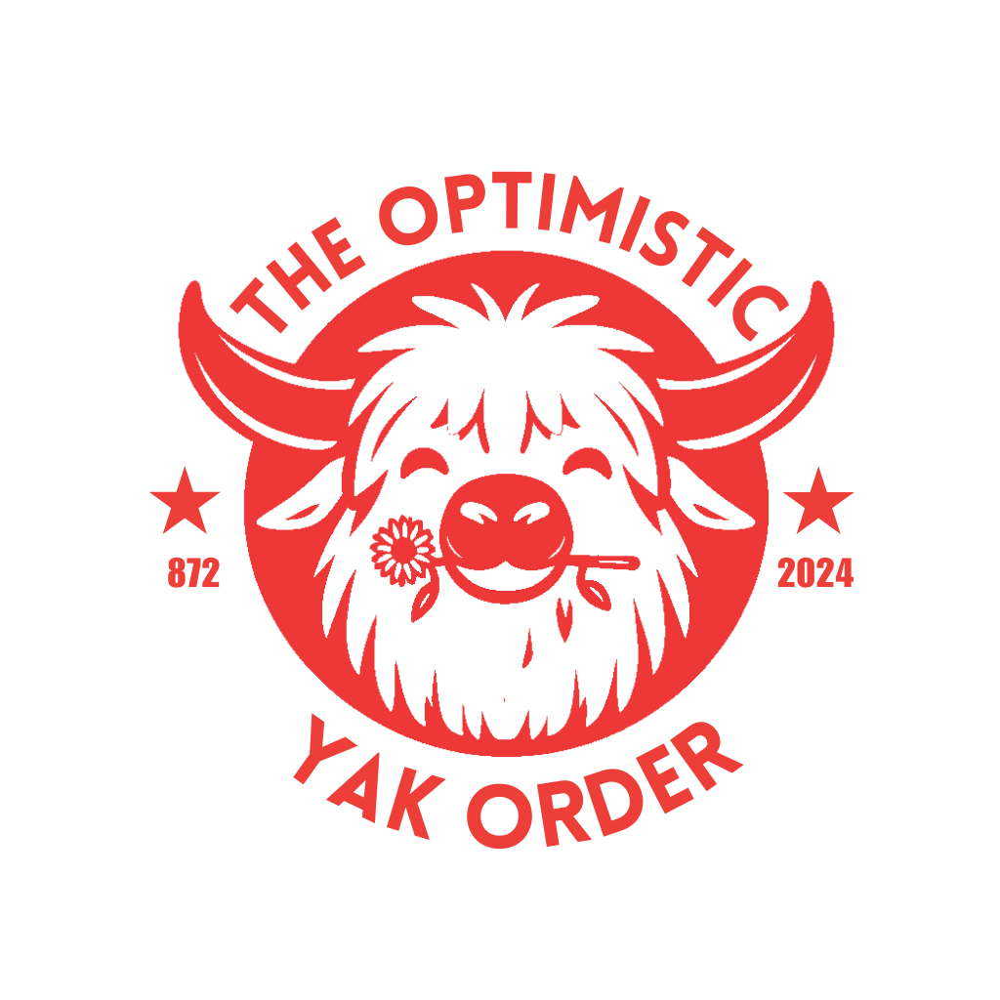

October 31, 2024 Letter

Hi, Thanks for showing your interest in the content library. The community interest and response continues to be overwhelmingly positive. Thank you for that! Over the past few months a small group of dedicated folks have been looking at what is out there and trying to come up with a strategy for how we can collect, catalog, and share it.
Cheers,
The TOYO team.
What has changed?
The Card Link Form has been rebuilt to track user submissions. Access to the library has been restricted while we significantly restructure the data and storage systems. This stuff isn't free though. We have spent money on hosting and a LOT of our own time building tools and cleaning up data. When we reopen, access will be limited to those people who submit 5 or more unique cards (that means 'new to the library'; MYO cards don't count currently). ALERT: if you submitted cards in the past, you are welcome to re-submit the same link and we will be able to merge the two submissions to give you credit.
We are also working on merging card data and store data this week to enrich the library with lots more searchable and filterable features. There's some very interesting things that come out of this joined dataset.
This library will remain solely focused on Yoto formatted content. The primary and most valuable content type will be official cards. Physical cards and Digital cards sometimes are different, and often different depending on the geographical location they came from. Playlists you've built as MYO cards are second-class submissions and are only valuable contributions if they contain customized icons, track names, description, and card artwork.
ETA for re-opening is November 13th
If you'd like to be invited to access The Optimistic Yack Order Archive, you must submit five (5) unique entries to that have not already been checked in (first come first serve). There is no limit to the number of participants; it might become harder to find unique cards as the population grows.
Directions
- Fill out this form and submit it 5 or more times.
- Once your 5 entries have been confirmed as unique, your membership will be confirmed. This can take up to 2 weeks depending on our availability.
- After confirmation, you'll be granted access to the full library of resources that we have built.
- Invalid entries will be rejected.
- MYO playlists will NOT count towards the official unique entries.
Tips
- Check out the LIBRARY CONTENTS to see the list of what we already have .
- Check the WANTED LIST to see some items we know we are missing.
- Other valid items are very likely out there, but the wanted list is a set of things we know we don't have and would be valid.
- To claim credit for cards you sent in before we began tracking email addresses, just send it in again with a note in the URL field and we can correlate it. You can't fake this, URLs are unique per card.
- Join r/moreyoto on Reddit to keep track of future updates.
- Join the Yoto Collaborative discord to get involved in contributing and have real time access to more community members and content.